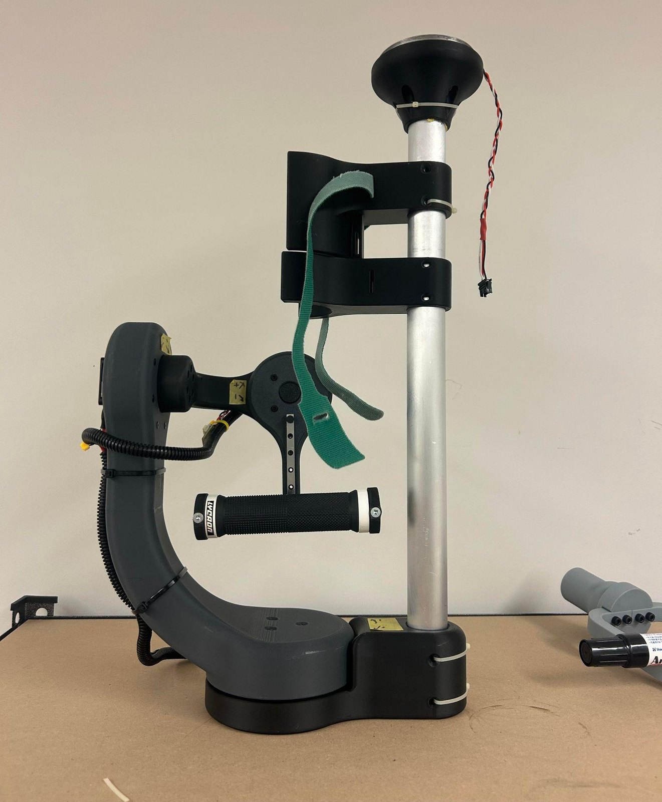
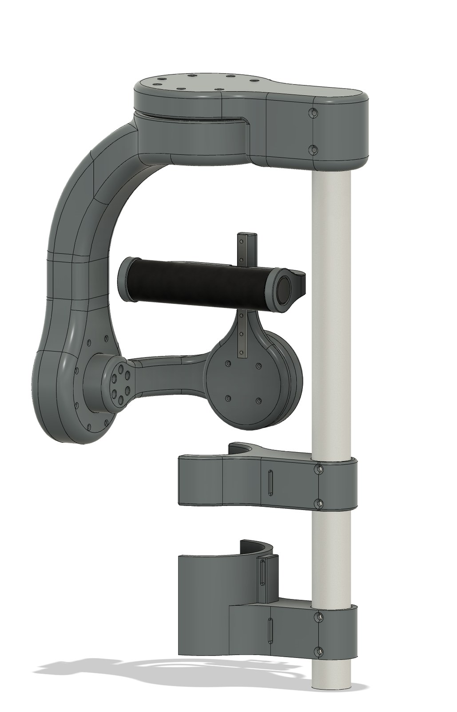
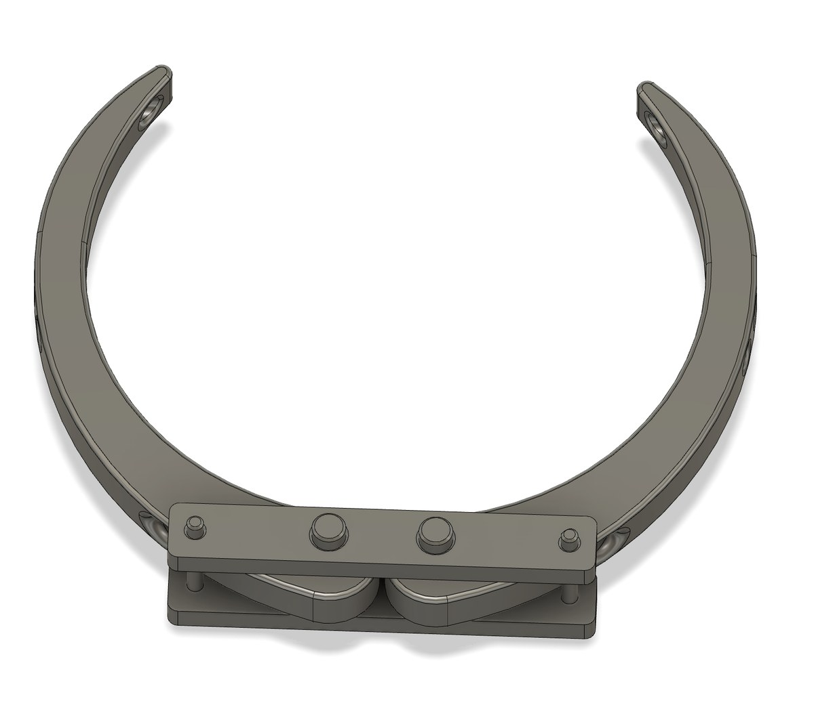
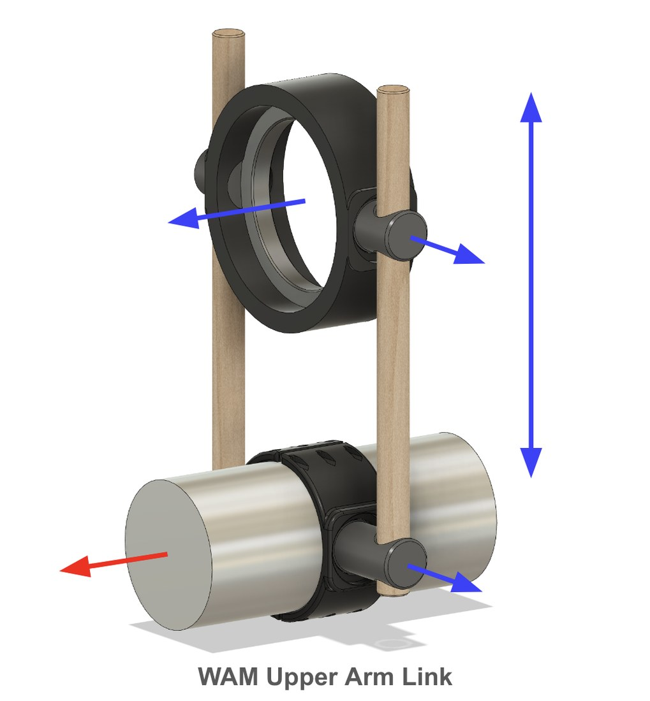
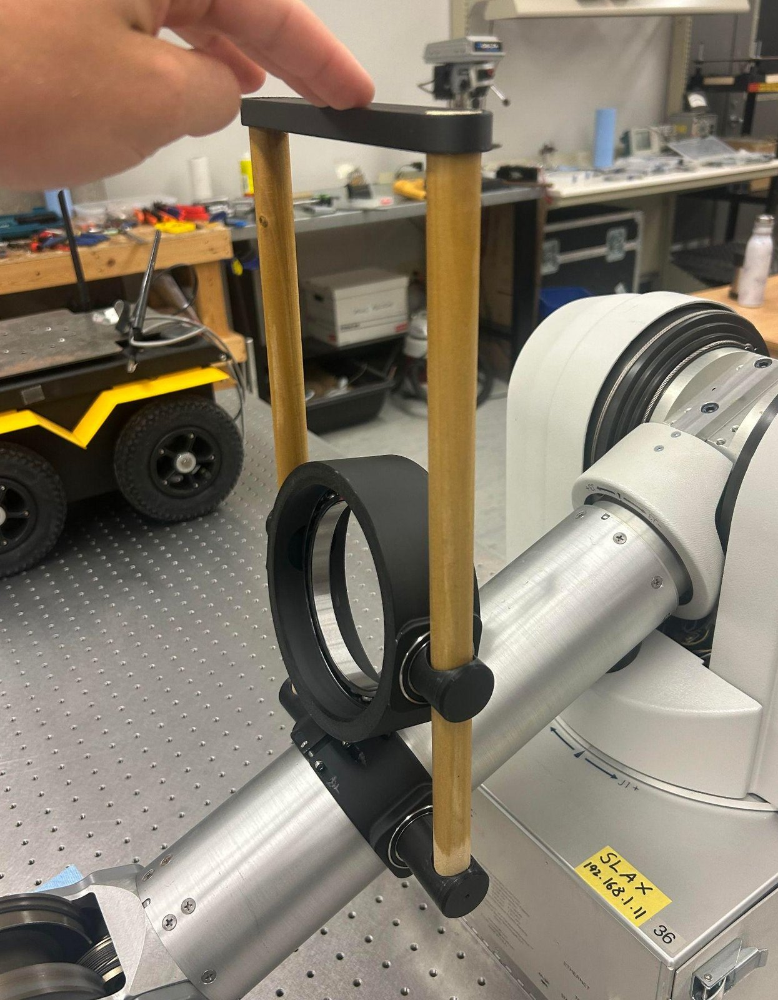
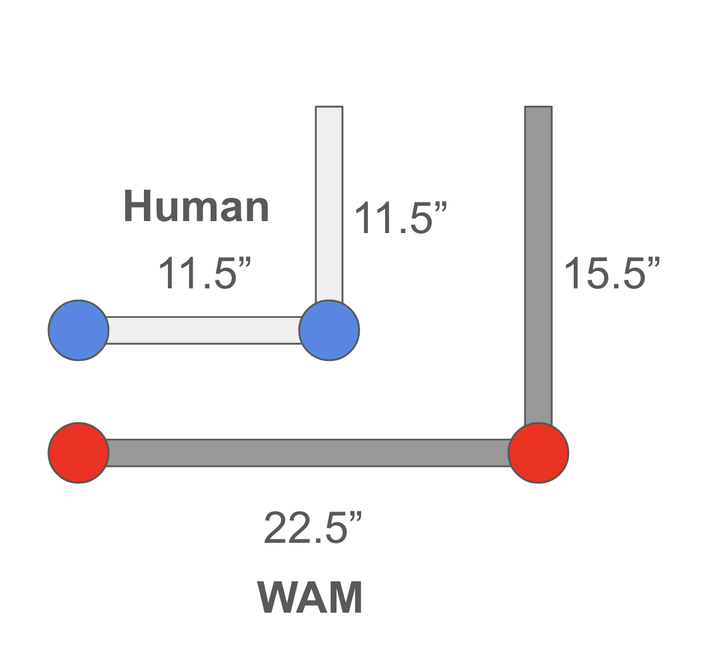
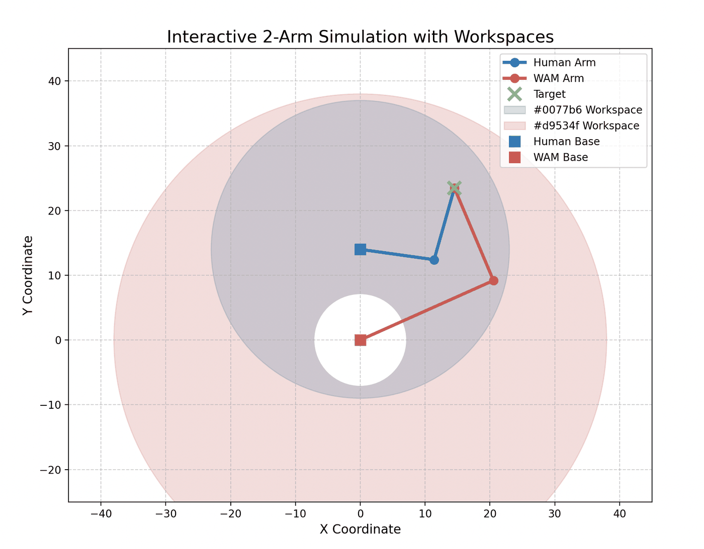
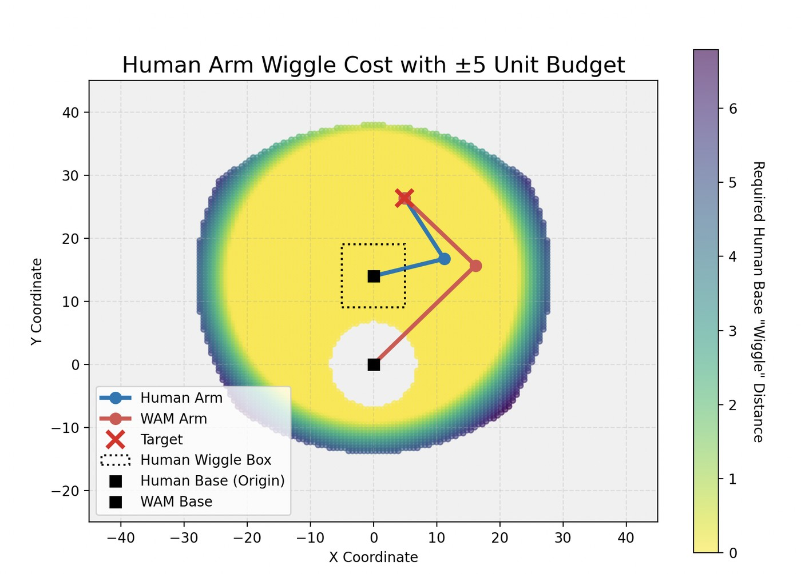
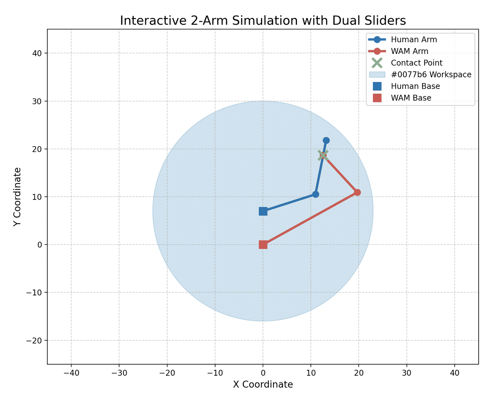

A simple direct-drive gimbal wrist




This is a simple gimbal wrist for the WAM leader arm. Its joints are driven directly, with no cables, because that made it easy to prototype. J5 and J6 use quasi-direct-drive (QDD) actuators for extra torque. A final design would swap those for capstans, and the later wrists in this series are cable-driven.
The wrist was a means to a bigger question. Up to then we had run the WAM in end-effector mode, where the operator holds a handle at the end of the arm. Could it instead work as an approximate exoskeleton, with the operator’s forearm strapped to it? We wrote down these questions:
- Is an approximate exoskeleton with a forearm attachment feasible? Does that attachment need passive joints, or can it stay rigid? Can the WAM sit on a flat base, or does it need to be mounted vertically? How should the operator’s arm be attached?
- How does limiting the wrist to a human’s range of motion affect task completion?
- Should there be an upper-arm attachment as well, and how should the work be split between it and the forearm attachment?
- Do we need a passive prismatic joint at the operator’s hand?
Strapping on the forearm
We started with a single rigid semicircle, 80 mm tall, padded with dense foam. It didn’t work well. The forearm is conical, so the straps slid down the arm. Moving the WAM through the forearm took enough force to be quite uncomfortable, and most of it went through two points where the bones pressed against the semicircle. A second semicircle spread the load out. That helped, but it was still uncomfortable.
Those first tests ran with imperfect gravity compensation. Once that was fixed we tested again, in both bidirectional and one-way teleoperation, and got the same results.
The cleanest arm mount I found was ETH Zürich’s self-adapting attachment mechanism for exoskeletons. It’s mechanically simple, and it centres arms of different sizes on the same axis. We 3D printed a small version and tested it. It would suit a finished product, but we didn’t need it for testing wrist prototypes.

An upper-arm attachment
The forearm attachment has to position J4, and it also sets the pose of J5. I wondered whether some of that work could move to an upper-arm attachment, or even to the hand. The idea was an attachment on the WAM’s upper-arm link that keeps the operator’s upper arm in the plane of the WAM’s J3 and J4 joints. That should still leave the operator plenty of freedom, and it would let them drive the WAM’s shoulder abduction and adduction with their upper arm.




It would go with a forearm attachment of a similar design that has only two passive axes, one along the forearm and one across it. The force to bend the elbow could then go through both attachments, with a sizable lever arm. Flexion could be handled two ways: through the forearm attachment, as proposed, or through the handle at the wrist if we added another passive joint. Internal and external rotation would go through the forearm attachment, which has a good lever arm when the operator’s elbow is bent and none at all when the arm is straight.
Testing showed that with this kind of exoskeleton the operator used their arm about as much as in end-effector mode, maybe more. We wanted to cut that down as far as possible.
Long links and offset joints
More testing with only the forearm attachment showed the setup is very tiring to use. The worst problems were the long link at J3, and joint centres that don’t line up with the operator’s: J4 against the elbow, and J3 against internal and external rotation at the shoulder. The operator ends up contorting or shifting their body to line back up with the WAM’s kinematics, and all that adjusting makes them drift around inside the cuffs.
A human wrist can get away with a limited range because the fingers are flexible. Strapped to the WAM, the operator loses that, so the WAM and the operator’s arm both end up in awkward poses for easy tasks like picking something up off a table.

A simple top-down simulation shows what those lengths do. Both arms are planar two-link chains, and the only constraint is that their end points coincide. A two-link arm with links \(\ell_1\) and \(\ell_2\) can put its end point anywhere at a distance \(r\) from its shoulder with
\[ |\ell_1 - \ell_2| \le r \le \ell_1 + \ell_2 . \]For my arm that gives \(0 \le r \le 23\ \text{in}\). For the WAM it gives \(7 \le r \le 38\ \text{in}\), an annulus with a 7 in hole around its base. In the plot my shoulder sits 14 in from the WAM’s, so my hand never gets more than \(14 + 23 = 37\ \text{in}\) from the WAM base, inside its 38. Since \(14 + 7 \le 23\), the hole sits entirely inside my reach, and the WAM covers all of my workspace except the \(7^2/23^2 \approx 9\%\) right around its own base.
Reach is fine, then. With links this different, though, the two elbows land in different places for the same hand position, as in the plot.

A second version lets my shoulder shift up to 5 in either way along each axis. That sweeps the 23 in disk over a 10 in square, so the reach grows to 28 in along the axes and \(23 + 5\sqrt{2} \approx 30.1\ \text{in}\) along the diagonals. The colour shows how far the shoulder has to move to reach each point. The most any point needs is a corner of the square, \(5\sqrt{2} \approx 7.1\ \text{in}\), which matches the top of the colour bar. At the top of the plot the region is cut off by the WAM’s 38 in reach.

As I saw it then, the exoskeleton’s job should be to line up the operator’s flexion–extension plane with the WAM’s. Where the two elbows sit within that plane matters less. The catch is that we would give up the WAM’s whole-arm manipulability. Keeping the planes lined up might take an upper-arm attachment, since they can drift apart once the hand moves out of the plane.
The plane idea holds for flexion and extension, and for abduction and adduction. For internal and external rotation the two planes can’t be aligned. It’s the same offset-centre problem as at the elbow, now at the shoulder, and it probably means another passive joint where the operator meets the WAM. With the operator’s shoulder only 7 in from the WAM’s, it may not be needed. Some rough testing suggested that works.
A passive joint at the forearm
Next we mounted the WAM vertically and fitted the gimbal wrist with a custom attachment that adds one passive joint, to stand in for that extra joint. The test was whether one passive joint is enough, and how the whole system behaves in this layout. The clips show it with and without the passive joint. Watch the operator’s body.
The passive joint let the operator put their arm where they wanted and still stay roughly lined up with the WAM. We only ran a free-motion test, with no teleoperated tasks, but the first results were very promising, and the WAM’s extra range of motion in this layout helped a lot. It was much less tiring than before and fairly usable. It still took a lot of whole-body movement, which suggests it wouldn’t work in a dual-arm setup.
The passive joint sat quite low on the operator’s arm. That’s a limitation of the gimbal setup. With an actuated wrist it would likely go somewhere else.
Where the WAM should meet the arm

For the effective length of J4 and the contact point, it looks like we want J4 long and the contact point as close to the operator’s hand as possible. That fits what we had seen with the end-effector design. A forearm attachment would still decouple arm movement from wrist movement and give better joint tracking overall, which should make more of the workspace usable.
Answers
| Forearm attachment | Feasible with a passive joint. With one joint on the forearm, aligned with the elbow, teleoperation worked. A rigid attachment made the operator move their body a lot and was uncomfortable, and the single passive joint mostly removed that. |
|---|---|
| Flat or vertical mount | Vertical. J2 gets a lot more range with the WAM mounted vertically, so the WAM can match the operator’s kinematics much more closely. Mounted flat it can reach a similar pose, but the operator’s elbow can’t come closer than about 45° to their body. The downside is that the WAM has to sit much higher for tabletop tasks. An elbow-up configuration would need an end-effector style device. |
| Attaching the arm | A strap with foam works reasonably well. ETH’s cable clamping method is more refined and worth considering for a final version. |
| Human wrist range | Limiting the wrist to a human’s range would almost certainly lower task completion. A fourth wrist joint would help make use of the follower WAM’s very dexterous wrist. |
| Upper-arm attachment | Not necessary, and it adds a lot of bulk. |
| Passive joint at the hand | Doesn’t seem necessary, though it needs more testing. |
Questions or comments? Email me at justin@justinvalentine.ca.